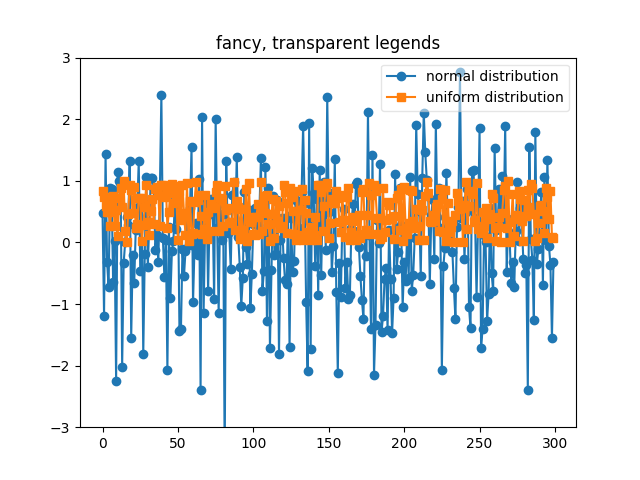

Version 3.0.3
Note
Click here to download the full example code
Sometimes you know what your data looks like before you plot it, and may know for instance that there won't be much data in the upper right hand corner. Then you can safely create a legend that doesn't overlay your data:
ax.legend(loc='upper right')
Other times you don't know where your data is, and the default loc='best' will try and place the legend:
ax.legend()
but still, your legend may overlap your data, and in these cases it's nice to make the legend frame transparent.
import matplotlib.pyplot as plt
import numpy as np
np.random.seed(1234)
fig, ax = plt.subplots(1)
ax.plot(np.random.randn(300), 'o-', label='normal distribution')
ax.plot(np.random.rand(300), 's-', label='uniform distribution')
ax.set_ylim(-3, 3)
ax.legend(fancybox=True, framealpha=0.5)
ax.set_title('fancy, transparent legends')
plt.show()
Keywords: matplotlib code example, codex, python plot, pyplot Gallery generated by Sphinx-Gallery